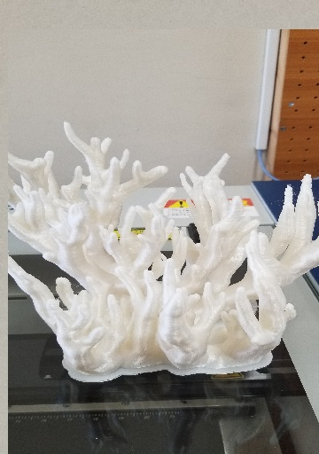
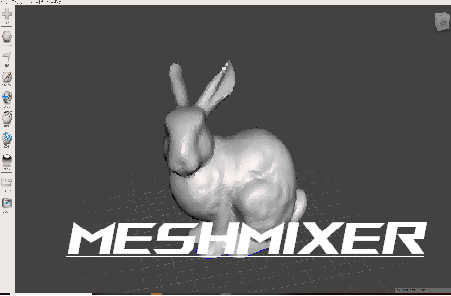

・試作7号で出来上がったデータをL-DEVOで出力しました。
・出力できたものの、細い箇所は汚く印刷されてしまうので1番細い箇所もさらに太くする必要がでてきました。
AUTODESKが無料提供しているソフトウェアのこと。
３Dデータを組み合わせたり、データの加工を行うためのソフトウェアです。 すでに作成してある３Dデータ同士をミックスして利用する場合などにも便利に利用できるツールです。
Meshmixerダウンロードリンク
